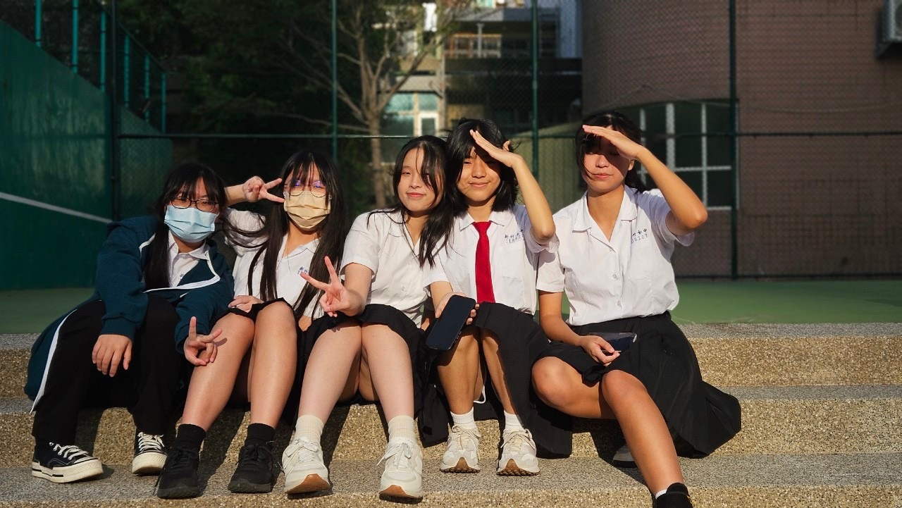
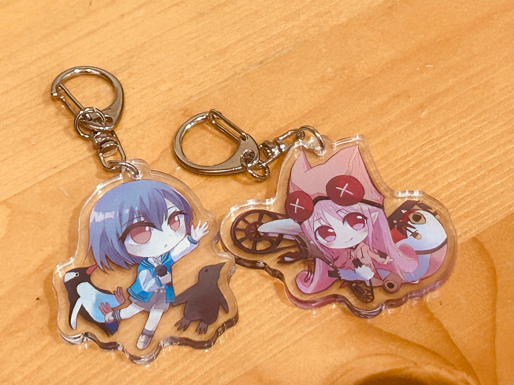
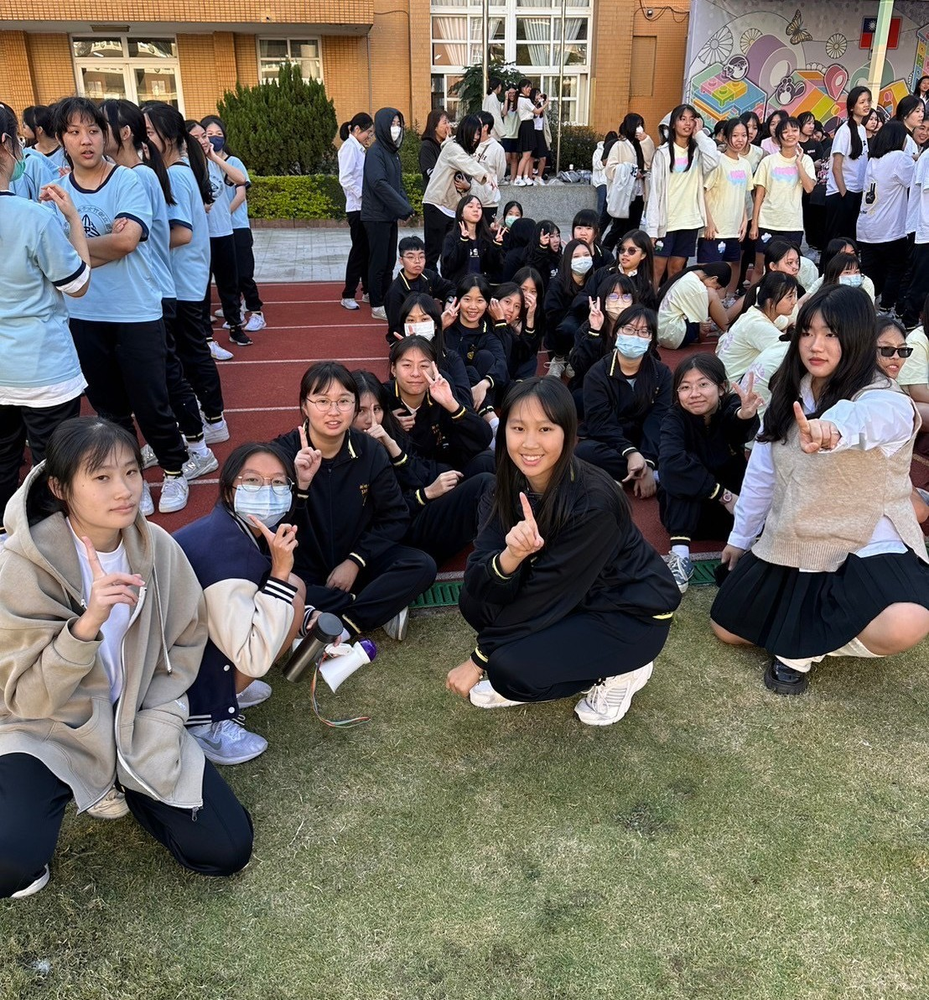

個人成果網站
展示我在高中三年的學習經歷、個人發展與成果心得等資料
About me
-
個人特質
熱愛創作 對於藝術領域有相當大的興趣，時常接觸不同方面的藝術媒體，並會在欣賞同時思考如何加入自己的創意，與改進方法
擅長配合 在團隊中屬於配合指令行動的腳色，能夠有效地完成別人分派的任務
溫和友善 性格雖內向怕生，卻總能以友善態度與人相處及傾聽
-
經歷
曾擔任電音社社長
portfolio
portfolio
修課記錄及多元表現成果
個人發展
個人發展

人際關係
我在國中時不是一個善於社交的人，甚至很常無法在人面前講話。但在高中這個新環境，有更多機會和不同的人交流，我也因此開始習慣與不熟的對談。也才得以結交許多珍貴的朋友。

興趣發展
畫圖是我從小到大興趣，在高中的這段時間我也不只是持續練習，還試著去做了更多不同種類的創作。像是製作小吊飾和嘗試讓畫動起來。這些體驗都很有趣，希望之後還有機會將我的創作活用在更多地方上。

活動參與
在高中期間與班上同學參與了許多班級活動，如班際合唱比賽、園遊會及校際運動會。雖然我大多時候不是 擔任領導的腳色，但在一次次的合作中，和同學們共同朝一個目標努力，合作完成事項，慢慢增進感情，認識彼此，這段時光還是成為了一段重要的回憶。